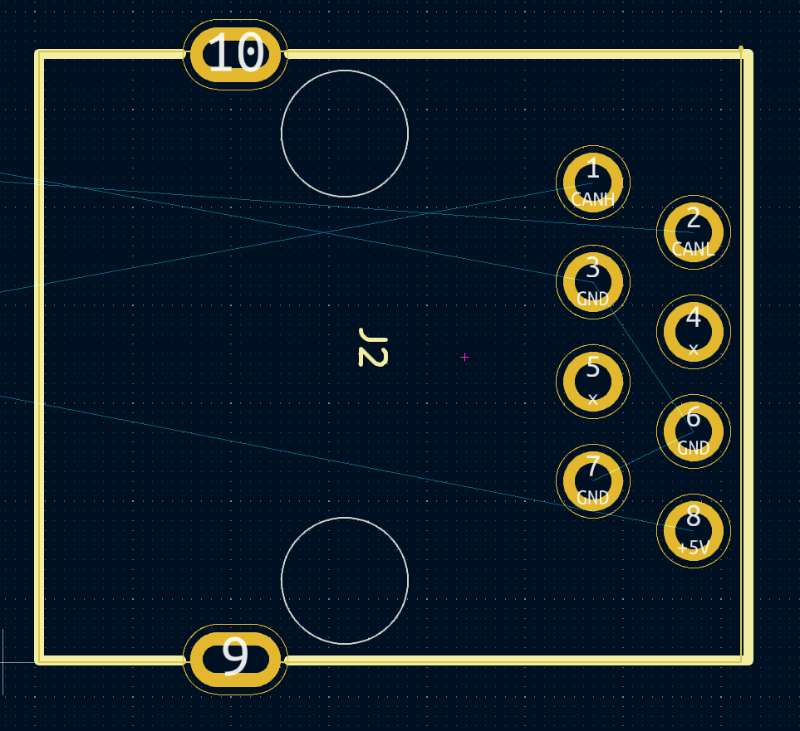
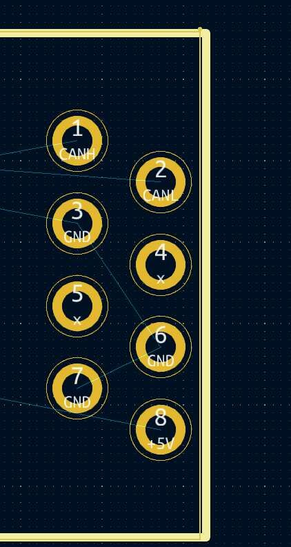
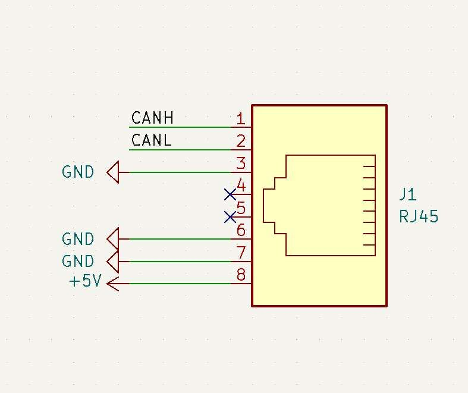
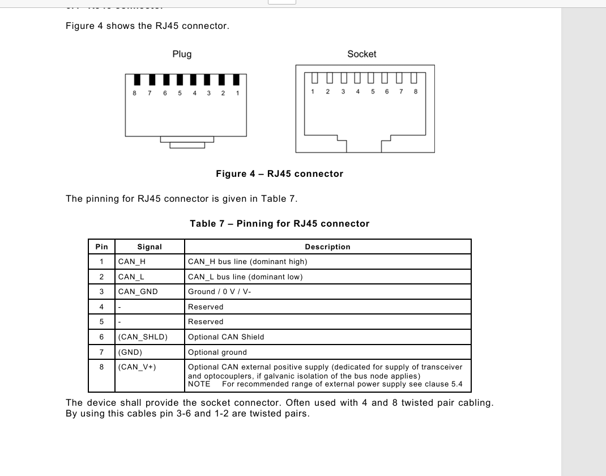

CAN NODE Temperature Sensor Module
About the Product
- Product SKU: EP-0244
- Product Name: CAN NODE Temperature Sensor Module
Description
The CAN NODE Temperature module is a sophisticated device designed for temperature monitoring and control within networked systems.
Features
-
Ethernet Connectivity: Equipped with an RJ-45 port, facilitating easy integration into Ethernet-based networks.
-
Standard Compliant Cabling: Compatible with both EIA/TIA568A and EIA/TIA568B wiring standards, ensuring broad compatibility with existing network infrastructure.
-
Wide Operating Voltage Range: Operates on a DC voltage between 4.95V and 5.5V, providing flexibility in power supply options.
-
Low Power Consumption: Consumes a modest 0.2A of current, making it energy-efficient and suitable for battery-operated environments.
-
Advanced MCU: Powered by the CH32V203G6U6 chipset from WCH, offering robust processing capabilities for complex tasks.
-
Reliable CAN Communication: Utilizes the TJA1051T/3 chipset for reliable CAN bus communication, essential for real-time data exchange in networked systems.
-
High-Precision Temperature Sensing: Features the NXP LM75B temperature sensor with a resolution of 0.125℃, allowing for precise temperature measurements.
-
Broad Temperature Monitoring Range: Capable of monitoring temperatures from -40℃ to 80℃, suitable for a wide range of environments and applications.
-
Built-in CAN Termination: Includes a 120-ohm termination resistor to ensure signal integrity over long bus lengths.
-
Dynamic Message ID Generation: The CAN message ID is dynamically generated by the MCU's UUID1, providing a unique identifier for each message (ESIG register R32_ESIG_UNIID1).
-
Edge Network Compatibility: Designed with a termination pin that, when shorted, ensures proper signal termination when the module is the last one on the network edge.
Specifications
- Ethernet Connection: RJ-45
- Ethernet Cable Standard: EIA/TIA568A-to-EIA/TIA568A or EIA/TIA568B-to-EIA/TIA568B
- Work Voltage: DC 4.95~5.5V
- Work Current: 0.02A
- MCU Chipset: CH32V203G6U6
- MCU Brand: WCH
- CAN Chipset: TJA1051T/3
- Temperature Sensor: NXP LM75B
- Temperature Resolution: 0.125℃
- Temperature Range: -40~80℃
- CAN Termination Resistor: 120 ohm
- CAN MSG ID: Generated by MCU's UUID1 as Message ID (ESIG register R32_ESIG_UNIID1)
Additional Notes
- Termination Pin Requirement: The Termination Pin of the CAN NODE Temperature module must be shorted when this CAN NODE is the last module on the edge network.
RJ-45 Pinout
- Detials on soldering pads


- Schamatic drawing

- Pinning for RJ45 connector
